Congratulations on your professionally upgraded iMac! This Update and Usage Hub provides everything you need to know about keeping your custom built machine updated and running perfectly for years to come.
Please Note: This guide is a living document and a work in progress. More information and tutorials may be added over time. If you have a specific question that isn't answered here, please feel free to reach out!
macOS Update Management Guide
Part 1: Preparation
An Important Note for all OpenCore Users
The most important rule for a stable system is to NOT use Automatic Updates. macOS Update will remove OLCP custom drivers each time the system is updated.
To prevent issues, we always use a safe manual update process. Please ensure the appropriate toggle (Install macOS updates) is OFF in System Settings > General > Software Update > App Updates and Security Responses by clicking the (i) button to show available options.
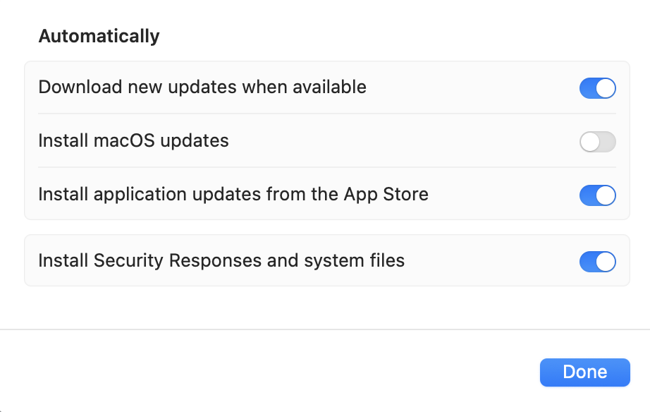
Ensure "Install macOS updates" is turned off in System Settings.Create a Time Machine Backup
As a professional best practice, I advise all Mac users to maintain a regular backup, regardless of their machine's make, model, or configuration. Before any system update, it is essential to create a full backup using Time Machine. This is your ultimate "undo button" and safety net, allowing you to restore your Mac to its exact previous state if anything goes wrong.
What You'll Need:
You will need an external hard drive. Any standard USB external drive from brands like Seagate, Western Digital, or LaCie will work perfectly. For best results, choose a drive that has **at least the same amount of storage as your iMac's internal drive, or larger.** For example, if your iMac has a 1TB SSD, use a 1TB or 2TB external drive.
How to Set It Up:
- Connect the Drive: Plug your new external hard drive into one of your iMac's USB ports.
- Format the Drive (if needed): A pop-up may appear asking if you want to use the drive for Time Machine. If so, click "Use as Backup Disk." If not, open the "Disk Utility" application, select your external drive, click "Erase," and format it as "APFS" or "Mac OS Extended (Journaled)."
- Start the First Backup: Once formatted, go to System Settings > General > Time Machine. Click "Add Backup Disk," select your external drive, and the backup will begin. The first backup can take a few hours, so let it run.
- Before an Update: Always ensure your backup is current. Click the Time Machine icon in the menu bar and select "Back Up Now" to force a fresh backup before you begin the macOS update process.
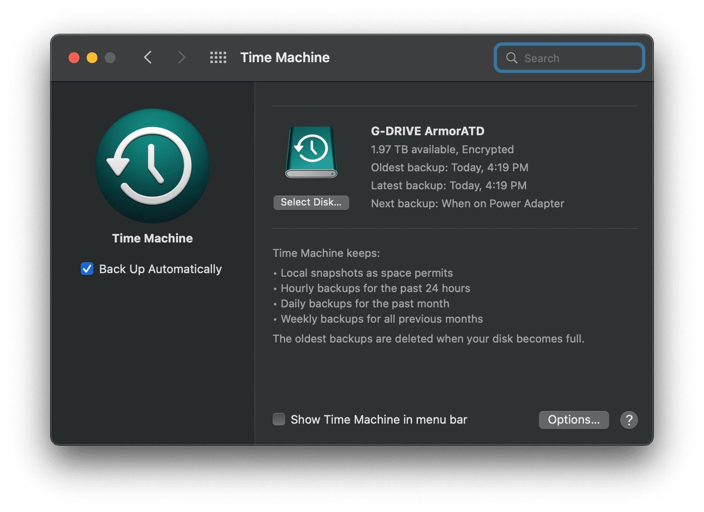
Time Machine settings in System Settings for reference.Part 2: The Smart Update Process
The OpenCore Legacy Patcher (OCLP) is an intelligent application that often guides you through the update process. The key is to follow its prompts. Here is the typical workflow:
Check for OCLP Prompts & Prepare
Before you do anything, open the OpenCore-Patcher app from your Applications folder. OCLP will automatically check for updates and prompt you if its own application or bootloader is out of date. Always accept these updates first.
Pro-Tip: Sometimes, when you check for a macOS update in System Settings, OCLP will detect this and proactively prompt you to download necessary libraries in advance. If you see this prompt, accept it. This makes the final patching step much faster.
Install the macOS Update
Once OCLP is up-to-date, you can proceed. Go to System Settings > General > Software Update and click "Update Now." Your iMac will download the official update directly from Apple's servers and begin the installation, which may involve several restarts. This is normal, and your machine will update by itself, without the need for user input.
Apply Post-Install Root Patches
This is the final and most important step. Each official update from Apple **wipes the custom drivers** needed for things like graphics and Wi-Fi to work on your iMac. This step reinstalls them.
After the macOS update is complete, the OCLP app should automatically open and prompt you that "post-install root patches are required." Simply follow the on-screen instructions to apply them. If it doesn't open automatically, just launch it yourself and click "Post-Install Root Patch." Reboot when prompted to complete the process.
⚠️ Important Note on macOS Tahoe Upgrades
At the moment, macOS Tahoe (26) is not yet stable for OCLP systems. The update will appear in your System Settings as shown below, but you must NOT install it yet.
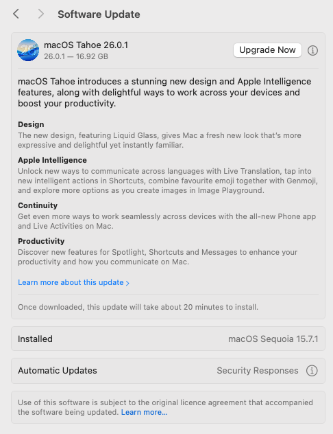
Example of the macOS Tahoe update prompt in System Settings.Attempting to upgrade now will lead to an unstable and unusable system. Please wait for the go-ahead on this guide before proceeding. All users will be informed here once it is safe to upgrade, which should be in January 2026, once the stable release has been fully tested.
General Apple enthusiasts and power user community sentiment is that macOS Tahoe 26 is not necessarily an improvement yet, even for non OLCP enabled Apple hardware kit.
As general advice, always make an informed decision, when considering OS upgrades regardless of make, model or device configuration you own.
Part 3: Frequently Asked Questions (FAQ)
A Clear Guide to OpenCore Legacy Patcher (OCLP)
At the heart of every modern, upgraded iMac I build is a brilliant piece of software called OpenCore Legacy Patcher, or OCLP. If you've ever wondered how it's possible to run the latest, most secure macOS on a machine that Apple no longer officially supports, this guide will explain the magic in a simple, technical way.
1. The Problem: The "Software Wall"
Every year, Apple releases a new version of macOS with new features and security updates. For business reasons, they also publish a list of Mac models that can officially run it. Typically, after about 6-8 years, older Macs are left behind and no longer receive these major upgrades, even though their hardware is often still incredibly capable.
This creates a "software wall" where perfectly good, high-quality machines are prevented from running modern software. This is the problem that OCLP was created to solve.
2. The Solution: OCLP as the "Master Translator"
It's important to understand that OCLP is not a "hack" or a pirated piece of software.
Think of OCLP as a highly sophisticated translator. The new macOS speaks a new "language" that the older hardware doesn't fully understand. OCLP is a modern, open-source, and publicly audited tool that sits between them and translates in real-time, allowing them to communicate perfectly.
It is a bootloader, which means it's a small piece of software that runs for a few seconds right when you turn your Mac on, before macOS itself even starts.
3. How It Works: The Startup Process
The genius of OCLP is that its process is both powerful and non-invasive. It doesn't permanently change or damage your macOS installation. Here's a step-by-step look at what happens when you press the power button:
Startup: When you turn on your iMac, the first thing it does is look for instructions on a tiny, hidden section of your main drive called the EFI partition.
OCLP Loads First: I install the OCLP bootloader onto this partition. So, before macOS starts, OCLP loads into the computer's memory (RAM).
Applying "In-Memory" Patches: For a few moments, OCLP creates a virtual environment in the memory. It applies a set of patches and instructions that essentially trick the official macOS installer into thinking it's running on a newer, supported machine.
Booting Genuine macOS: With the translation layer active, the system then proceeds to load the 100% genuine, unmodified, and cryptographically signed version of macOS that was downloaded directly from Apple's servers.
The Post-Install Root Patch (The Final, Crucial Step): This is the magic that makes everything work smoothly after you've logged in. Each official update from Apple wipes the custom drivers needed for things like graphics, Wi-Fi, and Bluetooth to work on your specific iMac. The OCLP application's final step is to run a "Post-Install Root Patch," which simply reinstalls these necessary drivers. This is why your graphics look beautiful and your Wi-Fi connects perfectly.
4. The Result: What This Means For You
A Modern Experience: You get to use the latest features, run the newest applications, and receive critical security updates on a budget-friendly machine.
Excellent Performance: Because the core macOS is genuine and the OCLP process has a negligible impact on performance, the speed you experience is a direct result of the high-quality hardware upgrades, like the mandatory SSD.
Safety and Stability: The process is transparent, community-vetted, and doesn't permanently alter the core operating system, making it a reliable and stable solution for extending the life of your iMac.
Yes, absolutely. My goal is to ensure your iMac has a long and useful life, and this covers both minor updates and major yearly upgrades.
For regular updates (e.g., from macOS Sequoia 15.7.1 to 15.7.2), you can use the simple, manual update process that I outline in the Update and Usage Guide I provide upon purchase.
For major yearly OS upgrades (e.g., to the next version, macOS 26 "Tahoe"), the answer is also yes. However, it is crucial not to upgrade on release day.
I personally test these major upgrades and will give my clients the go-ahead once I've confirmed it's stable, reliable and performant, usually 3 months after release day. Status updates are communicated via my online Update and Usage Guide provided upon purchase.
Although currently available to manually Upgrade, macOS 26 Tahoe is still in early stages development and testing with a view for a stable upgrade in January - February 2026.
Updates are installations of minor OS releases, versioned by incremental improvements, bug fixes and security patching of the same Operating System (e.g., from macOS Sequoia 15.7.1 to 15.7.2).
Upgrades are major, potentially yearly (eg. macOS) releases of new OS'es (e.g., from macOS Sequoia to macOS Tahoe).
Your Time Machine backup is your ultimate safety net. You can boot into macOS Recovery (by holding Command+R at startup) and restore your Mac to its exact previous state. For minor issues like Wi-Fi not working, simply re-running Step 3 (Apply Post-Install Root Patches) fixes the problem 99% of the time.
Dual Boot and Windows 11 Management Guide
If your iMac is pre-configured to run both macOS and Windows, giving you the best of both worlds, this guide explains how to switch between them and handle updates for both systems.
How to Switch Between macOS and Windows
Thanks to the OpenCore bootloader, you don't need to hold any keys. The boot selection menu will appear automatically every time you start your iMac.
- Restart or Turn On Your iMac: Simply start your machine as you normally would.
- Wait for the Boot Picker: After a moment, you will see the OpenCore boot picker screen, showing icons for macOS and Windows.
- Stop the Timer: The system automatically boots into the default OS after 5 seconds. To stop the timer, **press any arrow key**.
- Select and Boot: Once the timer is stopped, use the left and right arrow keys to highlight the operating system you want to use. When you've made your choice, press the **`Enter`** key or click the icon with your mouse to start up.
Updating Windows and macOS
Updating Windows: You can update Windows normally. Simply go to Start > Settings > Update & Security > Windows Update and install any available updates as you would on a standard PC.
Updating macOS: To update your macOS installation on your dual-boot system, you must follow the *exact same procedure* detailed in the "macOS Update and Upgrade Procedure" section above. This ensures the OpenCore Legacy Patcher configuration remains correct. Back to macOS Update Process
Keeping Apple hardware drivers updated on Windows
For optimal performance in Windows, it's important to keep your hardware drivers current. Apple provides a simple tool for this.
Using Apple Software Update:
- Open Apple Software Update: Click the Start menu and search
for "Apple Software Update" or find it in the Boot Camp Control Panel.
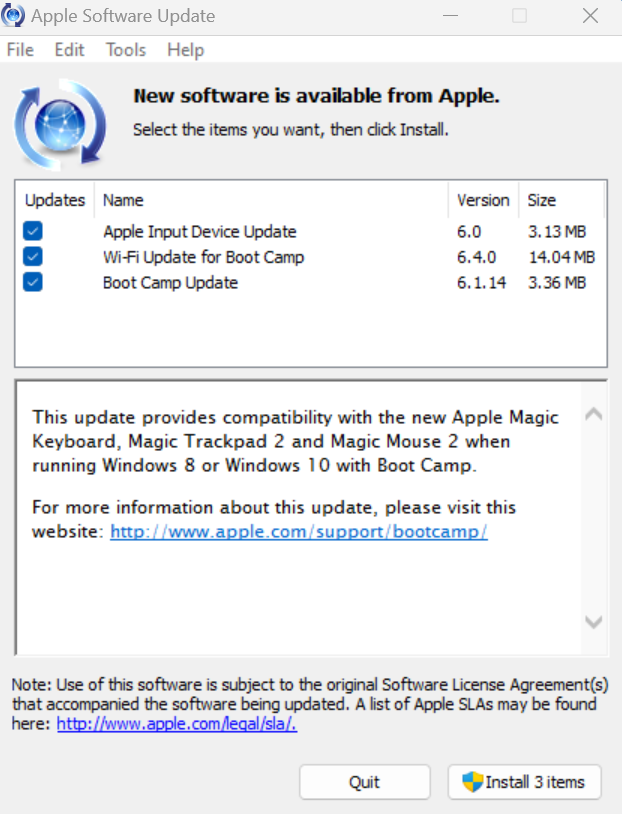
Apple Software Update application showing available driver and support software updates - Check for Updates: Click "Check Now" to scan for available updates to your Boot Camp drivers and Apple hardware support software.
- Install Updates: Select the updates you want to install and click "Install." Some updates may require a restart to complete.
- Automatic Checks: You can configure Apple Software Update to check for updates automatically by adjusting the settings in the application.
Recommended Schedule: Check for Apple updates at least once a month to ensure your Boot Camp drivers remain current and your iMac's hardware functions optimally in Windows 11.
⚠️ Important Note for Windows 11 Users
To ensure system stability, it is important to manage a specific setting within the Microsoft PowerToys application. Please make sure the "Awake" utility is enabled. This prevents the iMac's screen from freezing after the system enters a hibernation state due to inactivity. This setting is pre-configured on my builds, but it's important to be aware of it and ensure it remains active.
Download PowerToys: If you need to download and install Microsoft PowerToys, you can get it from the Microsoft Store: Microsoft PowerToys
Configuring PowerToys Awake Settings:
- Open PowerToys: Search for "PowerToys" in the Windows Start
menu and open the application.
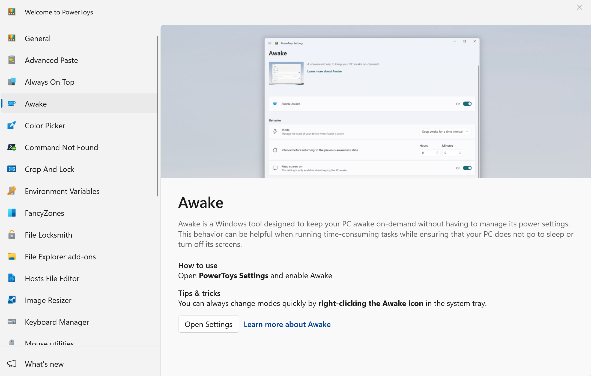
PowerToys main interface showing the Awake option in the sidebar - Navigate to Awake Settings: Click on "Awake" in the left
sidebar to access the power settings.
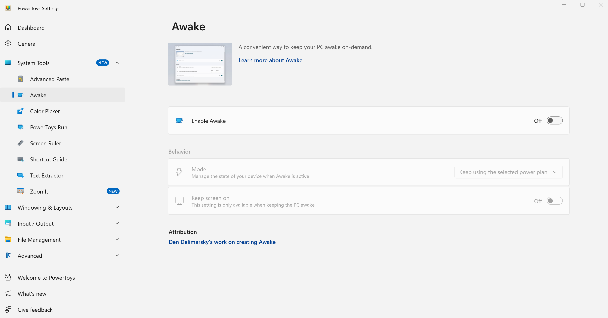
Default Awake settings view - Enable and Configure Awake: Toggle the "Enable Awake"
switch to ON, then select "Keep awake indefinitely" from
the dropdown options. Additionally, make sure to enable the "Keep
screen on" toggle to prevent screen hibernation.
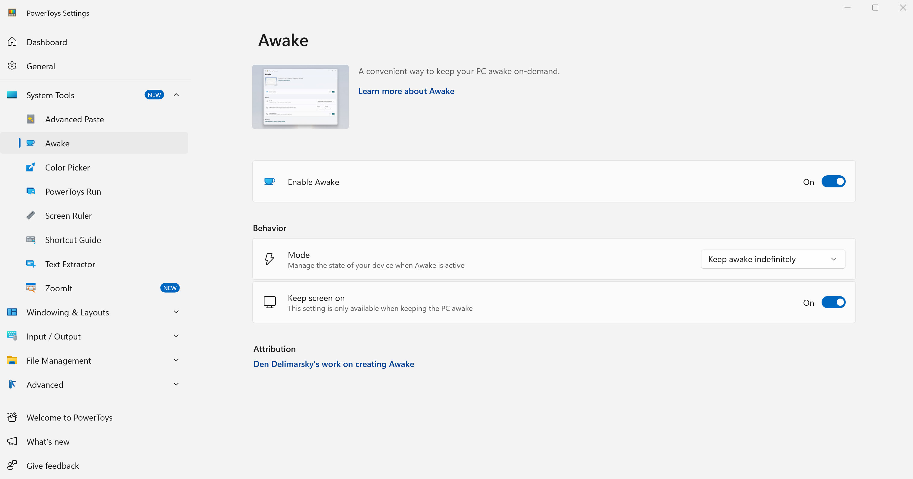
Correct configuration with "Keep awake indefinitely" and "Keep screen on" both enabled
Alternative Method: You can also manage Awake by right-clicking the PowerToys Awake icon in the system task tray and selecting the appropriate mode.
Important: Both "Keep awake indefinitely" and "Keep screen on" options must be enabled to prevent the iMac's screen from freezing during hibernation.
User Account Management Guide
Managing user accounts on your dual-boot iMac involves understanding both macOS and Windows 11 user management. This guide covers account setup, security, and best practices for both operating systems.
Creating and Managing User Accounts
Your iMac supports all standard user account types and management features for both macOS and Windows 11. Here's how to properly set up and manage user accounts on both systems:
macOS - Adding New User Accounts:
- Open System Settings: Click the Apple menu > System Settings (or System Preferences on older macOS versions).
- Navigate to Users & Groups: Look for "Users & Groups" in the sidebar or main settings area.
- Authenticate: Click the lock icon and enter your administrator password to make changes.
- Add User: Click the "+" button to add a new user account.
- Choose Account Type: Select from Administrator, Standard, or Managed with Parental Controls.
- Complete Setup: Fill in the required information (name, account name, password, and password hint* optional).
Windows 11 - Adding New User Accounts:
- Open Settings: Press Windows key + I, or click Start > Settings.
- Navigate to Accounts: Click on "Accounts" in the left sidebar.
- Access Family & Users: Click "Family & other users" in the account settings.
- Add Account: Click "Add someone else to this PC" under "Other users".
- Choose Account Type: Select "I don't have this person's sign-in information" then "Add a user without a Microsoft account" for local accounts.
- Complete Setup: Enter username, password, and security questions for the new account.
- Set Account Type: After creation, click the account and choose "Change account type" to set as Administrator or Standard User.
💡 Dual-Boot Consideration
macOS: All new user accounts will automatically benefit from all OCLP enhancements including graphics acceleration, Wi-Fi functionality, and any other post-install patches, as the OCLP configuration is installed globally on your system.
Windows 11: New user accounts will have access to all pre-configured Windows applications including PowerToys but the Awake functionality needs to be configured for each User account individually.
Account Security & Best Practices Advice
Securing user accounts on both macOS and Windows 11 is essential for protecting your data and maintaining system integrity. Here are platform-specific security recommendations for your macOS and/or Windows 11 iMac:
macOS Security Settings:
- Strong Passwords: Use unique, complex passwords for each account. Consider using the built-in password manager.
- Two-Factor Authentication: Enable 2FA for Apple ID accounts used on the system.
- Automatic Login: Disable automatic login for security, especially on shared machines.
- Screen Lock: Set up screen saver password requirements after a reasonable timeout period.
- Guest Account: Disable the guest account if not needed for security.
Windows 11 Security Settings:
- Microsoft Defender: Ensure Windows Defender is active and updated.
- User Account Control (UAC): Keep UAC enabled to prevent unauthorized changes.
- Microsoft Account vs Local: Choose based on your privacy preferences and sync needs.
- Windows Updates: Enable automatic security updates for critical patches.
- Family Safety: Use Microsoft Family features for child accounts and screen time management.
Disk Encryption for Both Systems:
macOS - FileVault:
- Enable FileVault: Go to System Settings > Privacy & Security > FileVault.
- Choose Recovery Method: Select either iCloud account recovery or create a recovery key.
- Important: Store your recovery key securely - you'll need it if you forget your password.
- Restart Required: FileVault encryption begins after restart and continues in the background.
Windows 11 - BitLocker (Needs Pro license):
- Enable BitLocker: Go to Settings > System > Storage > Advanced storage settings > Disk & volumes.
- Select Drive: Click your Windows drive and select "Turn on BitLocker".
- Backup Recovery Key: Save your recovery key to a secure location (not on the encrypted drive).
- Encryption Process: BitLocker will encrypt in the background while you continue using Windows.
⚠️ Administrator Accounts (general advice):
- Always maintain full access to at least one Administrator account with a known password on both operating systems.
- All computers, regardless of make and model have Administrative, Standard (restricted) and Guest (most restricted) Accounts built in by default.
- You as the Owner and User of the system have the ability to create, enable, disable and remove these features and accounts. A computer cannot and will not function without at least one Administrator account built in, which cannot be removed.
Account Switching & Fast User Switching:
macOS:
- Go to System Settings > Users & Groups
- Click "Login Options" in the sidebar
- Enable "Show fast user switching menu as" and choose your preferred display option
Windows 11:
- Click the Start button and select your user account icon
- Select "Switch user" from the dropdown menu
- Or use Ctrl + Alt + Delete and select "Switch user"
Time Machine Restore Guide
Restoring from Time Machine backups on OCLP systems requires a special procedure to ensure complete restoration without issues. This guide covers the recommended method for full system restoration.
⚠️ Important Information Before Restoring
- Root Patches Impact: OCLP root patches can interfere with Time Machine restoration and may cause kernel panics.
- Sequoia Warning: Time Machine on macOS Sequoia may not function properly even after uninstalling root patches, potentially causing restore loops.
- System Requirements: Full restoration is only supported on Monterey and newer. Big Sur does not support snapshot reversion.
- Network Drives: If your backup is on a network drive, ensure Ethernet connectivity as WiFi may be unavailable during restoration.
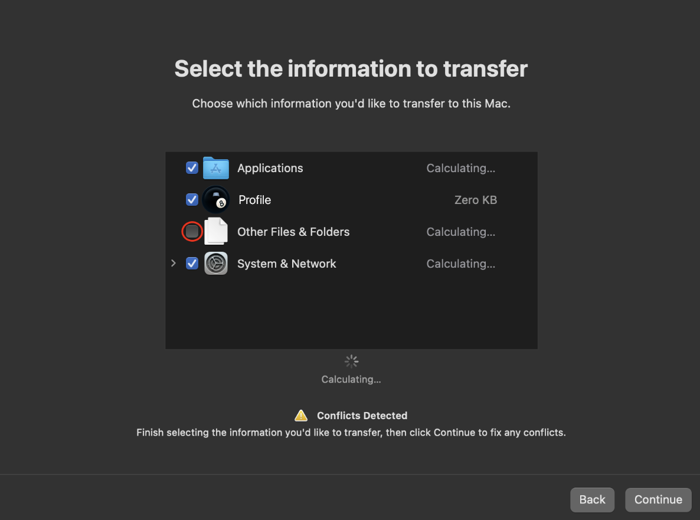
Migration Assistant showing transfer options during the restoration processComplete Time Machine Restoration
This method provides complete system restoration, restoring everything exactly as it was, including all files and system configurations.
📋 Requirements
Requires macOS Monterey or newer. Your Mac will temporarily run slower with reduced functionality during the process.
Steps:
- Initial Setup: During first-time Setup Assistant, do NOT restore the backup. Complete all settings as if starting fresh and reach the desktop.
- Remove Root Patches from System: Open the OCLP application and navigate to "Post Install Volume Patches" section. Click to revert/uninstall the root patches. This completely removes all OCLP modifications from the system.
- Mandatory Restart: Restart your iMac to ensure the root
patch removal takes full effect.
Expected Behavior: Your Mac will feel slow due to lack of graphics drivers, resolution may be incorrect, and WiFi will likely be unavailable. This is normal and expected.
- Use Migration Assistant Only After Restart: Once logged back in after the restart, launch Migration Assistant and proceed with the complete restoration process. Do not attempt to use Migration Assistant before completing the restart.
- Reinstall Root Patches: After restoration is complete, reopen the OCLP application and reinstall the root patches to restore full functionality.
- Final Restart: Restart once more to complete the process with full OCLP functionality restored.
This method provides complete restoration but requires temporary removal and reinstallation of root patches.
Common Issues and Solutions
- Sequoia Restore Loops: If you encounter "Migration Finished" loops on Sequoia, restore on an older macOS version first, then upgrade to Sequoia afterward.
- Network Drive Access: If your backup is on a network drive and WiFi is unavailable during the process, connect via Ethernet cable.
- Kernel Panics: If you experience crashes during restoration, ensure you're using the correct method for your macOS version and that root patches are properly handled.
- Restoration Issues: If the restoration process fails, ensure root patches are completely reverted before attempting again.
Useful Resources
Links to important Apple Resources
Direct links to official Apple services and support pages that you might find useful, as through my Online Support and assistance I have noticed information, resources and functionality are not always as readily available and accessible.
These are particularly useful for new users to the Apple Ecosystem and macOS operating system, to understand and manage your Apple ID, iCloud services and Time Machine Backups.
-
Apple iCloud Dashboard - Browser Interface Login
iCloud browser interface access provides functionality to understand your synced resources between devices from a central management interface. The web version of iCloud provides functionality and visibility pertinent and your personal data synced between devices. Link (https://www.icloud.com/)
-
Manage Your Apple ID - Browser Interface Login
Manage your Apple ID account details, security settings, payment information, and see which devices are signed in as well as App Store purchases and other features. Very useful for general Apple ID management. Link (https://appleid.apple.com/)
-
Time Machine Offical Apple Guide
Time Machine is the best and primary backup functionality available to you for your Mac. It is built on server-grade snapshotting capabilities that allow you to not only backup your entire installation but also access files directly from snapshots taken at specific points in time. It is by far one if not the most useful functionality macOS provides for users. Link (https://support.apple.com/en-gb/104984)
-
Apple Password Manager Guide
Apple's introduction of Password Manager application on macOS Sequoia reduces dependency on 3rd Party Cloud Password Manager solutions and it provides the ability to safely Store your authentication details locally with the ability to sync passwords between devices and iCloud storage through your iCloud account. Very powerful resource and functionality for personal account safety and credentials management. Link (https://support.apple.com/en-gb/120758)
Useful 3rd Party Applications
A curated list of very useful, tried and tested third-party applications that can enhance your macOS experience. These are applications I don't personally live without on my own macOS system.
-
AppCleaner
A little free-soft program which might have escaped most users. This program called AppCleaner has the ability to find and delete not just macOS applications themselves, but orphaned and associated modules, libraries and files associated with the application that are left behind after deletion. This is particularly useful for keeping your system clean and free of unnecessary files. One of a kind application. Link (https://daisydiskapp.com/)
-
Daisy Disk
There is alot to be said of Daisy Disk, simple yet extremely powerful this application provides the ability to full scan and graphically provide direct information and access to the entire contents of your internal drive and installation; Files, folders, applications, system modules the list is endless. It is the only comprehensive full installation and storage management solution that transparently shows you exactly what is not only stored on your drive, but also external drives, and your cloud storage accounts (eg. Google Drive, Dropbox etc.). Indispensable. Link (https://daisydiskapp.com/)
-
VLC Media Player
A free and open-source cross-platform multimedia player that plays most multimedia files as well as DVDs, Audio CDs, VCDs, and various streaming protocols. It is the most widely used feature rich and universal video player in the world. Link (https://www.videolan.org/vlc/download-macosx.html)
-
EtreCheck Pro
EtreCheck Pro is the de-facto fully comprehensive 3rd party macOS full system auditing and health check tool. This application is widely used throughout the Apple enthusiasts and power users community to fully diagnose, troubleshoot and audit the entire macOS system which also includes hardware. The tool functionalities are too broad to briefly summerise, if you are in need of a full overview of your system this is it. Link (https://etrecheck.com/en/welcome.html)
-
Little Snitch
A comprehensive macOS only networking tool with broad capabilities for privacy and security focused systems. For advanced users only, as a personal recommendation. Link (https://www.obdev.at/products/littlesnitch/index.html)
-
The Unarchiver
A much more capable replacement for the built-in Archive Utility on macOS. It can handle a wider variety of archive formats like RAR, 7z, Tar, and more. Link (https://theunarchiver.com/)
About Me
As an Apple ACiT & ACMT Certified Technician, I'm passionate about custom-building iMacs and it's a professional hobby. I think iMacs are superb, elegant devices that, when properly maintained and upgraded, can unlock incredible performance with the latest operating systems.
That’s why I perform a full internal service on every machine: a deep clean of the cooling system, new thermal paste, and crucial upgrades to new high-speed SSDs and RAM.
Whether you have bought a custom build or just have a question about Macs in general, feel free to reach out—I'm always happy to consult.
Other services I provide:
- Upgrade Your Existing iMac: I offer a service to upgrade pre-owned 27" and 21.5" iMacs (Late 2012 - 2019) for a standard 2 hour labour fee plus components/parts costs and postage (2 way). Please message me to discuss the procedure and pricing. Work involved and transaction carried on eBay.
-
Remote Support: It is my pleasure to offer general support via eBay messaging if you have any questions about your custom iMac, general enquiries or if you seek advice. For more in depth IT related work, issues or if you just need an expert’s support, I provide Remote Support assistance at an hourly rate. This service includes but is not limited to:
- IT Consultation
- Applications Support
- Backup and Restore Assistance (macOS only)
- Error Troubleshooting
- Online Security Hardening and Advice (2 Factor Authentication Setup, Password Manager Setup, Browser Security Settings etc.)
- iCloud Overview and Setup
Credentials available upon request, particularly LinkedIn account and work experience within the field of IT.
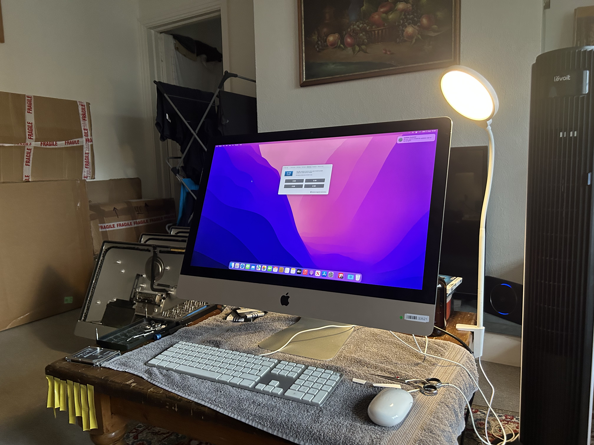
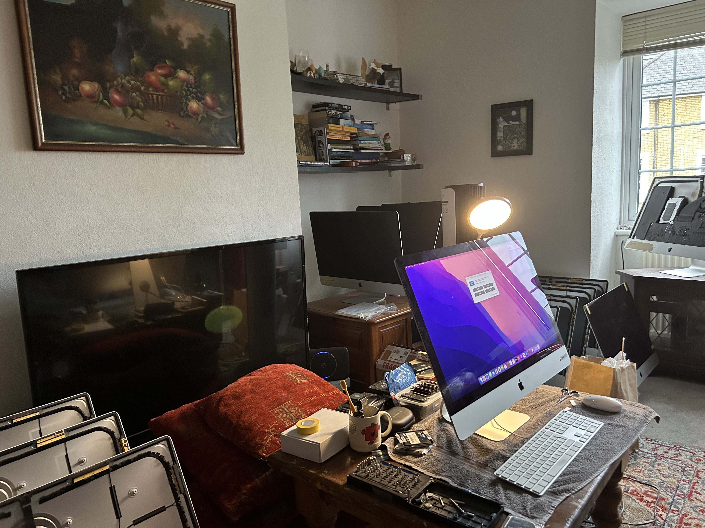
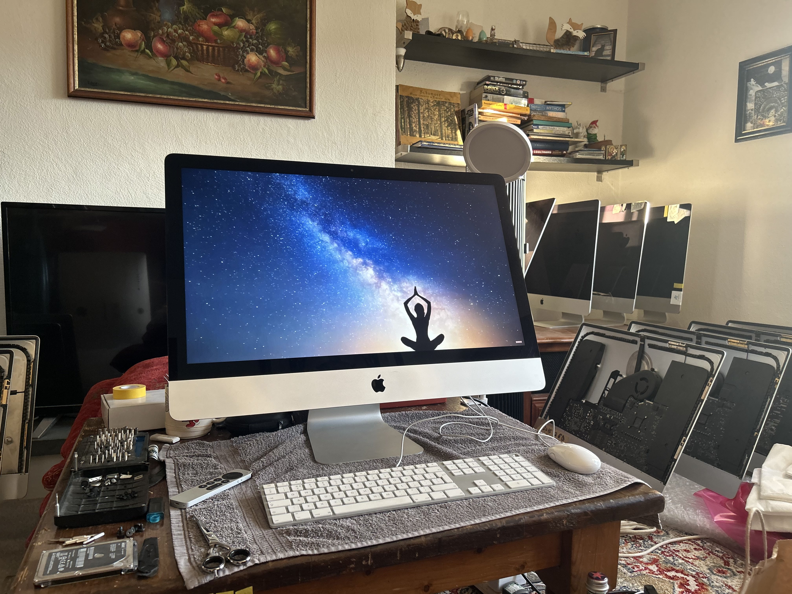